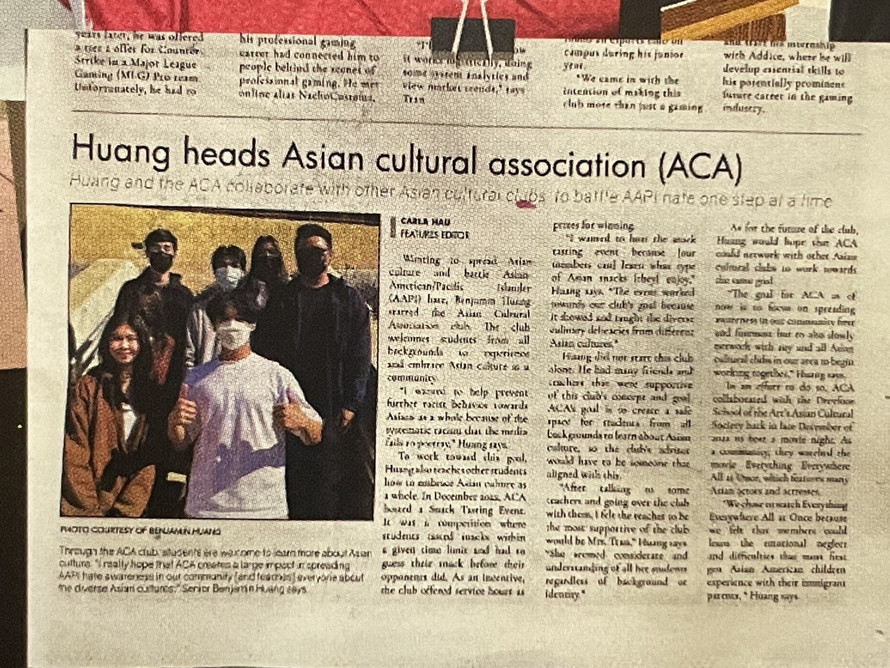
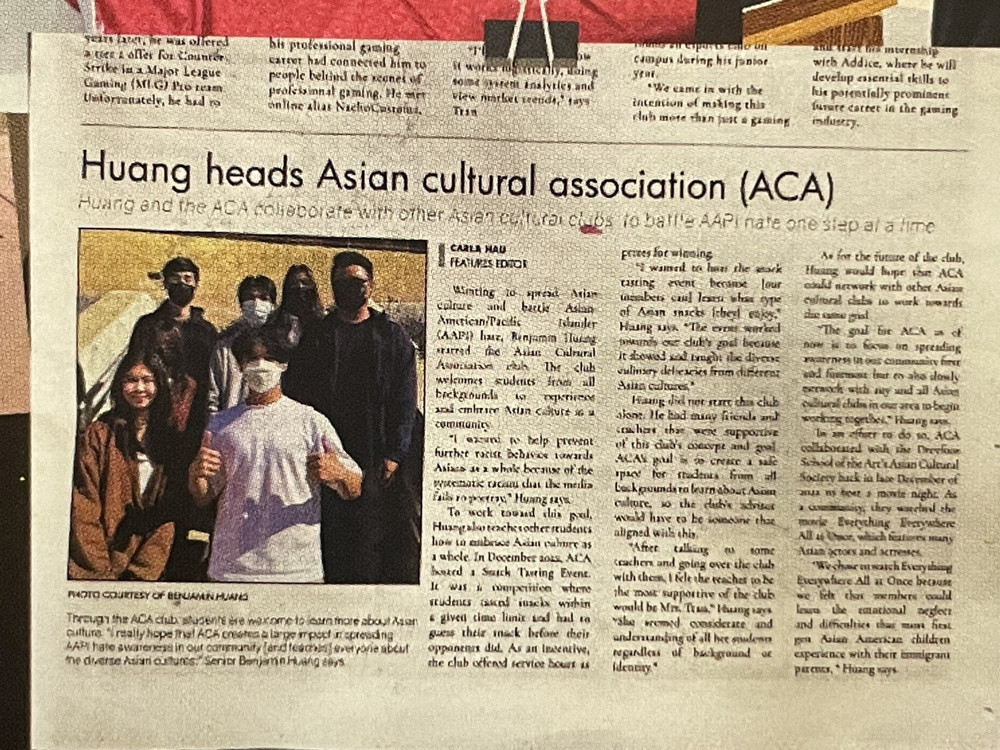

Kelly Phan
Hello, I am Kelly Phan, currently in my first year at the University of California, Riverside, pursuing a major in pre-business with a concentration in finance. Despite lacking formal work experience in the business and finance fields, my commitment to self-study and engagement with finance and business topics, coupled with academic assignments in my courses, has allowed me to expand my knowledge and nurture the skills necessary for success in the captivating world of finance.
Growing up in a household where my parents were consistently occupied with work commitments, I assumed the responsibility of managing our home budget at a young age. By the time I turned ten, I successfully took on the role of adeptly handling the monthly allowance my parents provided. This involved not only paying bills but also allocating funds for groceries, entertainment, school supplies, and learning resources. I was fortunate enough to be able to pocket the remaining funds, providing me with a unique hands-on experience in financial decision-making.
Throughout high school, as I attained more independence in managing my finances, I decided to experiment with wealth-building techniques. One specific area I explored was compound interest. I arranged for my joint account holder to transfer my savings into a high-yield savings account, experiencing the gradual accumulation of funds over time. This strategic approach allowed me to earmark funds for my college education needs and all my entertainment needs. This journey has not only provided me with practical insights regarding financial management but has also ignited my passion for finance. I look forward to further refining my skills through academic pursuits, hands-on experience, and continued dedication to self-improvement in the fascinating field of finance.
Experience
Treasurer & Co-founder
• coordinated different fundraisers for club
• speaker at club meetings
• managed funds for events our club hosted
Volunteer
• contributed to my community virtually and in-person
• participated in managing funds during boba fundraisers
• attended all general meetings
Volunteer
• made donations to food drives
• passed out water, register contestors, and managed crowds at marathons
• attneded all general meetings
Education
University of California Riverside
Portfolio


